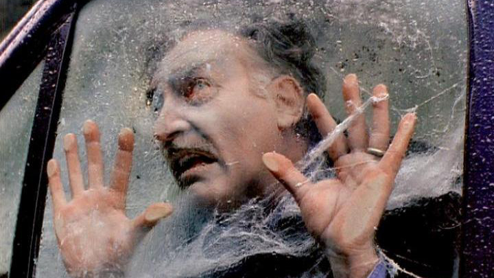
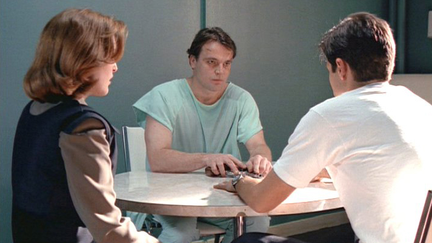
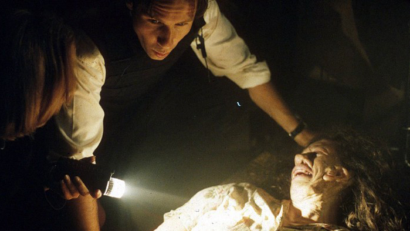

Updated: 23 Jan 2019 6:58 am
Posted: 11 Sep 2018 2:15 am
But why a top 12? Simple: When we first created this list based on the original run of the show, it was a top 10. But since then we got two more modern seasons of The X-Files, and we just had to add two more of our favorites. So let's get into the Top 12! Watch our History of Awesome episode on The X-Files above.
12
"The Lost Art of Forehead Sweat" is an outrageously funny, outside-looking-in chapter that explored/skewered the phenomenon known as the Mandela Effect (or is it the Mengele Effect? or am having a Mengele Effect about the Mandela Effect?).The messaging of the likely final, eleventh season continued here about how no one (whether it's the American public or actual viewers of The X-Files) cares about shadowy government conspiracies anymore because everything is terrible and nothing is scared. It sort of all funneled into a joke this episode as Mulder and Scully found themselves in an absurdist adventure all about collective acceptance of lies. Or false memories. Or whatever you want to call it when no one's ever really on the same page about the truth, which is supposed to be an objective construct.Written and directed by Darin Morgan, this romp featured all-rounder Brian Huskey as Reggie, a man on the brink of mental collapse who tries to convince Mulder and Scully (aka "Muldy" and "Sculls") that the infamous Dr. They has been systematically changing the population's collective memory - touching on everything from innocuous old toys, TV shows, and Jell-O products to illegal government operations. In fact, Reggie will tell you he invented the X-Files division itself - and even hung up the "I Want to Believe" poster! Overall, it's a masterful, and loving, lampooning of the series featuring hilarious performances from both Gillian Anderson and David Duchovny.
11
A funny, clever, absorbing episode, "Mulder & Scully Meet the Were-Monster" twisted and played with tropes from the show's old trademark monster-of-the-week episodes. It's not the first time the show's given us outside-the-box silliness like this. In fact, writer Darin Morgan, who penned this chapter, is the creative force who gave us "Clyde Bruckman's Final Repose" and "Jose Chung's From Outer Space."Everything about this one was solid. From the opening scene featuring Mulder chucking pencils at Scully's poster to him trying to figure out how to photo and/or video the mystery creature for proof of its existence (we just get a shot of Mulder screaming hysterically as blood lands on his cheek) to the were-monster himself lying about Scully coming onto him in the cellphone shop, this installment was on its toes the entire time. The monster man got a dog and NAMED HIM DAGOO! C'MON!
And Scully hit the nail on the head with "I forgot how much fun these cases could be." Yeah, she knew Mulder was being "batcrap crazy," but it was the Mulder she preferred. The kind of Mulder who'd stand in front of her and rambunctiously act out her side of a hypothetical argument about lizard men.
10
When a carnival freak show sees some of its own brutally murdered, Mulder and Scully decide to investigate the strange world of "humbug" -- the old-school term for hoax or fraudulent spectacle. There is nothing actually supernatural about the sideshow's employees (who include an alligator man, a former dog-faced boy, an escape artist, and a "geek"), most of whom can trace their particular oddities to a medical condition or just strange lifestyle choices. Of course, Mulder nonetheless thinks he has an otherworldly explanation for the murders in something called the legendary Fiji Mermaid... but could it be that, for once, Mulder has it all wrong?This Season 2 episode was an early attempt at the dark humor that would prove to work so well on The X-Files. While never undermining the story or its characters, the laughs in "Humbug" come from the self-awareness of the show's creators (particularly the episode's writer, Darin Morgan). Take the scene when one of the freaks talks about how, thanks to the inevitable genetic engineering of the 21st century, people like him are a dying breed. "I've seen the future and the future looks just like him," he says, pointing at Mulder in the distance, who is striking a particularly heroic (bordering on ridiculous) stance. "Imagine, going through your whole life looking like that."
Aside from the humor, the episode also benefits from some truly stylish touches, as when Scully awakens to see what appears to be men literally falling from the sky. Supported by a great guest cast of familiar favorites (Vincent Schiavelli, Twin Peaks' Michael J. Anderson), "Humbug" is requisite X-Files viewing and a segment that only gets better with age.
9
"Paper Hearts" leaves behind UFOs, aliens and the show's mythology to instead focus on Mulder and the other part of his search: what happened to his sister. The episode, written by Breaking Bad creator Vince Gilligan, is creepy and unsettling with barely a hint of the supernatural. The only element here that would even qualify this case as an X-File is the presence of what appears to be a ghost taking Mulder to the crime scenes. Of course, Scully is able to explain this away, and little more is made of it.Duchovny adds a layer of pain and torment here, as we find out just how deeply scarred he is from his sister's disappearance. The bad guy -- a sick and twisted child murderer named John Lee Roche (Tom Noonan) -- is one of the most disturbing villains to make an appearance in the series. There's no Cigarette Smoking Man, no black ooze, no special powers – just undeniable and all-too-real evil. This is one of those episodes that proved the series could get under your skin. It also showed us the many levels of Fox Mulder and why David Duchovny was so essential in creating this iconic character.
8
In another episode written by Vince Gilligan, a high-speed car chase in Nevada culminates in the apprehension by police of the driver... and, in quick order, the explosion of the head of the car's passenger. Mulder and Scully, investigating fertilizer purchase orders in Idaho -- as part of their recent (and demeaning) punishment by their FBI overseers -- decide to investigate the unusual case as "one quick side trip." But soon after arriving in Nevada, Mulder winds up getting kidnapped by the driver, one Patrick Crump, who heads back out on his high-speed journey with Mulder at the wheel, apparently driven by some debilitating need to just keep moving forward. Or else, you see, his head will explode too, just like his wife's before him."Drive" opens with a mock news report of the car chase in question, echoing the O.J. Simpson incident of just a few years earlier. But it's the interplay between Mulder and Crump that makes this episode a standout. The tragic victim of an overreaching military experiment, Crump is the living proof of the conspiracies which are Mulder's life mission to uncover. Played by Bryan Cranston -- in the episode that put him on Vince Gilligan's radar, eventually leading to their collaboration on Breaking Bad -- Crump here is an antagonistic yet heartbreaking character, and as he and Mulder become unlikely allies.
"Drive" in turn becomes a memorably scary X-Files episode - not for any particular monster or alien presence, but because of the perhaps most frightening element of the show's world ever: mankind itself, and the governments that supposedly protect us.
7
In this Rashomon tale, Mulder and Scully try to get their stories straight after Mulder drives a stake through the heart of a pizza delivery boy. They argue about everything, be it the existence of vampires, the name of their Texas motel, or whether the local sheriff (Luke Wilson) had an overbite. In the end, we discover that the sheriff and everyone else in town are indeed vampires and these new-school bloodsuckers (who just want to drink cow's blood and be left alone) drug the agents, before pulling up stakes (Vince Gilligan's pun, not ours - and yes, he wrote this one too!).The real fun lies in how Mulder and Scully choose to see themselves as well as each other. Scully paints herself as a devoted and heroic martyr, going without food and sleep to please a selfish and bossy Mulder, while he portrays her as a mean and whiny jerk, constantly sneering at his polite and scholarly arguments in favor of the supernatural. "Bad Blood" is full of truly funny moments, like Scully getting a craving for pizza while cataloguing a victim's stomach contents during an autopsy. It also brilliantly explores, through humor, how deeply Mulder and Scully crave to be better understood and appreciated by one another.
6 
Mulder and Scully find themselves stranded in a remote cabin with a forest ranger, a logger and an eco-terrorist while searching for a group of missing loggers. They soon come to realize that the missing men were killed by swarms of bugs that attack when the sun sets. The eco-terrorist, whose vandalism led to the agents being trapped in the first place, comes through in the end with an escape plan, but they cannot outrun the night. The strange green bugs catch and cocoon them all, and it's only a timely rescue by the government that keeps Mulder and Scully from being completely devoured.The episode covers familiar ground in the fright department: being afraid of the dark, being trapped, not knowing who you can trust. And it boasts several interesting twists, the biggest and best being that Mulder and Scully don't get away in the end and wind up as bug food! The strength of Chris Carter's script is how smart it is; for instance using an on-going environmental debate between the agents and the supporting characters to uncover the mystery of the ancient hungry wood mites. Mulder and Scully are unique in that they can speak -- casually, believably and entertainingly -- on subjects like geology, botany, and entomology. They're the sexiest nerds in TV history.
5
X-Files had a comedic element – mostly provided by Mulder's amusing sarcasm – from the moment it began. And gradually, the usually serious show dabbled in the occasional episode that was almost completely comedic in tone, starting with Season 2's "Humbug." But it was "Jose Chung's From Outer Space" in Season 3 that showed that X-Files could create a true comedy masterpiece that almost completely broke away from the show's usual format and tone. After three years on the air, X-Files had established a certain formula, which this episode, written by Darin Morgan, gleefully sent up.Jesse Ventura and freakin' Alex Trebek as the Men in Black; an alien sitting in captivity smoking a cigarette; Scully as a gushing fangirl to the title character; an angry detective who says "Bleep" and "blankety-blank" in place of his curses… This episode had it all. There's also an uber-geeky character who mistakes Mulder and Scully for Men in Black, describing one as "disguised as a woman, but wasn't pulling it off." And David Duchovny proved what a good sport he was, as Mulder is described as "so blank and expressionless, he didn't seem human." It all centers around the seemingly bizarre but ultimately inspired casting of Charles Nelson Reilly as Jose Chung, who stands out as one of the most unique characters this show created, and that's saying something.
4 
In this Vince Gilligan-penned installment, Mulder and Scully match wits with a self-styled mental samurai, who enjoys using his hypnotic voice to get people to kill themselves. Mulder becomes obsessed with stopping Pusher (Robert Wisden), who views him as a long-awaited worthy opponent. In the intense climax, Pusher wills Mulder into a game of Russian Roulette, but when he's commanded to turn the gun on Scully, Mulder fights him long enough for Scully to break the spell with a fire alarm, and Mulder instead shoots Pusher.Though the episode is loaded with memorable scenes of terror (the crying FBI agent begging for help before lighting himself on fire, Agent Burst being talked into having a heart attack while Mulder and Scully try frantically to disconnect the phone), it's the emotional bond between our two leads that really resonates. "You and your pretty partner seem awfully close," Pusher purrs at Mulder, and yes, there's something undeniably intimate about the way they doze next to each other during a stakeout, or fret over the other's safety in the field. When it first aired, Scully's simple gesture of taking Mulder's hand to lead him out of the hospital created shockwaves among fans who longed to see them together. Whether you thought the love between them was platonic or something more, you couldn't watch "Pusher" and not see their bond.
3
When Scully's father dies unexpectedly, she finds herself drawn to a serial killer on death row who claims to have psychic abilities. This inmate, Luther Lee Boggs, entices the FBI agent with the promise that he can put her in touch with her dead father, while also offering a dubious Mulder his help in tracking down another killer who is currently on the loose. But when Mulder is knocked out of the picture from a gunshot wound, it falls to Scully to not just solve the current serial-killer case, but also make her peace with her dad's passing.
Scully gets the spotlight in this first-season episode, written by Glen Morgan and James Wong, which not only delves into the character's family life for the first time -- a topic that would feed the show's storylines often in the coming seasons -- but also flips, for a change, the typical Mulder/Scully dynamic by making the former the skeptic and the latter the one who wants to believe. Interestingly, the episode also tracks with The Silence of the Lambs in many ways (a jailed and perceptive killer manipulates a female FBI agent, who is attempting to catch another murderer) while also offering up their own terrific villain, Boggs, powerfully played by the great Brad Dourif.
2 
It's Mulder and Scully vs. them Peacock boys (FOX's jab at NBC), in a small Pennsylvania town without cell phone reception and a Sheriff unironically named Andy Taylor (he's got a deputy named Barney too). Yes, this is the sort of town that's supposed to evoke thoughts of Johnny Mathis tunes, laundry being hung out to dry in the backyard and pies cooling on the windowsill. Instead, it's home to a deranged clan of deformed maniacs who "raise and breed their own stock" (if you get what I mean).A mix of humor and horror, "Home" -- written by Glen Morgan and James Wong and directed by the late, great Kim Manners -- showed us, and our heroes, that mutants and freaks didn't have to be the result of inhumane, classified government experiments. They could be regular joes just like us. Provided we all kept our no-toothed, quadruple amputee mother under the bed on a rolling board, and wheeled her out whenever it was time to make a "riddled with every rare birth defect known to science" baby.
Still.
So.
Unsettling.
1
When Peter Boyle passed away in 2006 many mourned the great actor, who was perhaps best known for his roles in Everybody Loves Raymond and Young Frankenstein. But X-Files fans will always treasure Boyle for his wonderful performance on this Season 3 episode, which won both Boyle and writer Darin Morgan an Emmy. While not an all-out comedy episode, this is certainly a quirky installment of the series, focusing on Mulder and Scully's investigation into a murderer who is cutting the eyes from his victims, all of whom are psychics. An initial suspect becomes Mulder and Scully's assistant on the case, in the form of Clyde Bruckman (Boyle), whose psychic abilities seem to be particularly honed around predicting the manner in which someone will die."Clyde Bruckman" is a distinctive episode of the series, mixing a healthy amount of humor -- Clyde's obsession with what kind of pie Mulder is stepping in as he describes a man approaching Mulder with a knife is hysterical -- with some very nasty business (we get a glimpse at some of those eyeballs the killer has removed) and ultimately a sad ending for Clyde himself. In just 44 minutes, Boyle creates a fully formed character who makes a big impact in his one and only appearance. It's also worth noting that Clyde's predictions seem pretty correct as the episode progresses, making many fans ponder both the darkly humorous implication that Mulder will die from autoerotic asphyxiation and Clyde's declaration that Scully, in fact, will never die.
In This Article
Popular in the Community